Investering er handlingen av å allokere kapital med forventning om fremtidig avkastning. Fra et regnskapsperspektiv innebærer investeringer komplekse vurderinger knyttet til klassifisering, måling, regnskapsføring og rapportering av finansielle og ikke-finansielle eiendeler.
For aksjeinvesteringer er det viktig å forstå skattemessige konsekvenser. Se vår Aksjonærmodellen - Komplett Guide til Norsk Aksjebeskatning for detaljer om beskatning av utbytte og kapitalgevinster.
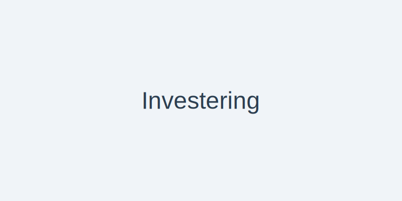
Når du vurderer ulike investeringsmuligheter og ressursbruk, er det viktig å forstå alternativkostnad, altså verdien av beste alternative bruk av begrensede ressurser. Les mer i vår guide til alternativkostnad.
Investeringer representerer en av de mest kritiske beslutningene for enhver virksomhet, og korrekt regnskapsbehandling er avgjørende for å gi interessenter et rettvisende bilde av selskapets finansielle stilling og fremtidsutsikter.
Seksjon 1: Grunnleggende Investeringskonsepter
1.1 Definisjon og Formål
I regnskapssammenheng defineres en investering som en eiendel som anskaffes med det primære formål å generere inntekt eller kapitalvekst over tid. Investeringer skiller seg fra driftsmidler ved at de ikke er nødvendige for den daglige driften av virksomheten.
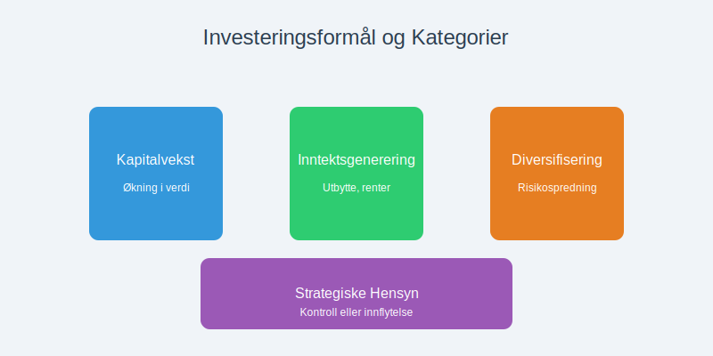
Hovedformål med investeringer:
- Kapitalvekst: Økning i eiendelens verdi over tid
- Inntektsgenerering: Løpende inntekter som utbytte, renter eller leie
- Diversifisering: Spredning av risiko på tvers av ulike aktivaklasser
- Strategiske hensyn: Kontroll eller innflytelse over andre virksomheter
1.2 Investeringshorisonter
Investeringer klassifiseres basert på tidshorisont, noe som påvirker regnskapsbehandlingen betydelig:
| Tidshorisont | Klassifisering | Regnskapsbehandling | Eksempler |
|---|---|---|---|
| Kortsiktig (< 1 år) | Omløpsmidler | Markedsverdi | Pengemarkedsfond, kortsiktige obligasjoner |
| Mellomlang (1-5 år) | Finansielle anleggsmidler | Avhenger av intensjon | Selskapsobligasjoner, strukturerte produkter |
| Langsiktig (> 5 år) | Finansielle anleggsmidler | Kostpris eller markedsverdi | Aksjer, eiendom, private equity |
Seksjon 2: Investeringstyper og Klassifisering
2.1 Finansielle Investeringer
Finansielle investeringer er verdipapirer og finansielle instrumenter som representerer krav på fremtidige kontantstrømmer.
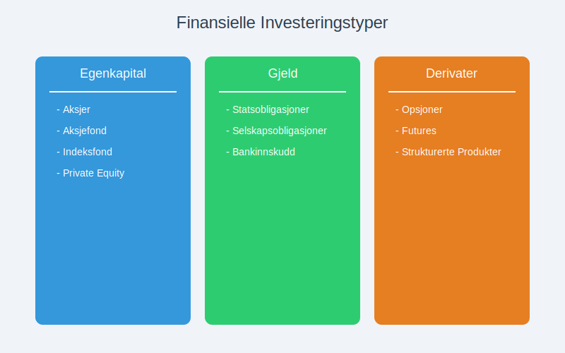
2.1.1 Egenkapitalinstrumenter
- Aksjer: Eierandeler i andre selskaper
- Aksjefond: Diversifiserte porteføljer av aksjer
- Indeksfond: Passivt forvaltede fond som gjenskaper avkastningen til en underliggende indeks med lavere kostnader
- Private equity: Investeringer i ikke-børsnoterte selskaper
2.1.2 Gjeldsinstrumenter
- Statsobligasjoner: Lån til staten med fast rente
- Selskapsobligasjoner: Lån til private selskaper
- Bankinnskudd: Sikre plasseringer med garantert avkastning
2.1.3 Derivater og Strukturerte Produkter
- Opsjoner: Rett til å kjøpe/selge til bestemt pris
- Futures: Forpliktelse til fremtidig handel
- Strukturerte produkter: Kombinasjoner av ulike instrumenter
2.2 Realinvesteringer
Realinvesteringer er fysiske eiendeler som har egenverdi uavhengig av finansielle markeder.
2.2.1 Eiendomsinvesteringer
Eiendom som investeringsobjekt krever spesiell regnskapsbehandling:
- Utleieeiendom: Genererer løpende leieinntekter
- Utviklingseiendom: Kjøpes for videresalg eller utvikling
- REITs: Eiendomsinvesteringsselskaper
2.2.2 Råvarer og Edelmetaller
- Gull og sølv: Tradisjonelle verdireserver
- Olje og gass: Energiråvarer
- Landbruksråvarer: Korn, kaffe, sukker
Seksjon 3: Regnskapsføring av Investeringer
3.1 Innledende Måling
Ved anskaffelse måles investeringer til anskaffelseskost, som inkluderer:
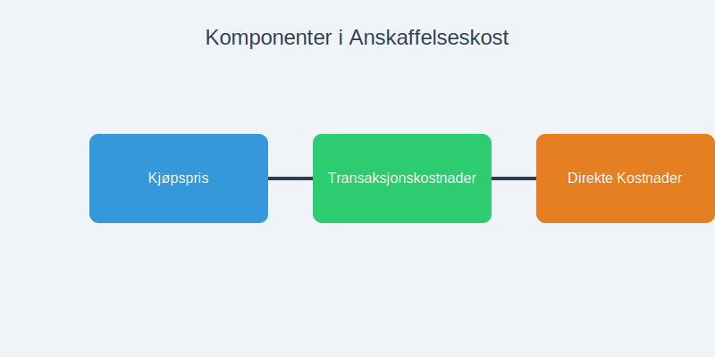
- Kjøpspris: Det beløp som betales for investeringen
- Transaksjonskostnader: Meglerhonorarer, avgifter, juridiske kostnader
- Direkte tilknyttede kostnader: Kostnader som er nødvendige for å bringe investeringen til ønsket tilstand
Eksempel på anskaffelseskost:
Kjøp av 1000 aksjer à kr 100 = kr 100.000
Meglerprovision (0,5%) = kr 500
Børsavgift = kr 100
Total anskaffelseskost = kr 100.600
3.2 Etterfølgende Måling
Etter innledende innregning avhenger målingen av investeringens klassifisering:
3.2.1 Investeringer til Virkelig Verdi
For investeringer som holdes for handel eller er tilgjengelige for salg:
- Måles til markedsverdi på balansedagen
- Urealiserte gevinster/tap føres over resultatregnskapet eller direkte mot egenkapitalen
- Realiserte gevinster/tap ved salg føres over resultatregnskapet som kapitalgevinst eller kapitaltap
3.2.2 Investeringer til Amortisert Kost
For gjeldsinstrumenter som holdes til forfall:
- Måles til amortisert kost ved bruk av effektiv rente-metoden
- Renteinntekter periodiseres over instrumentets løpetid
- Nedskrivninger ved forventet kredittap
3.3 Regnskapsføring av Investeringsinntekter
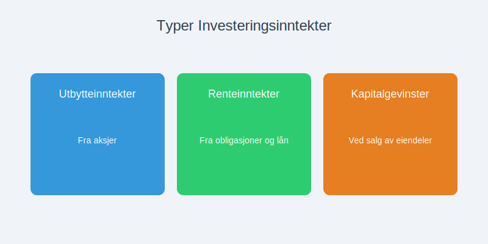
3.3.1 Utbytteinntekter
Utbytte fra aksjeinvesteringer regnskapsføres når:
- Rettigheten er etablert: Utbytte er vedtatt av generalforsamlingen
- Beløpet kan måles pålitelig: Utbyttebeløp er kjent
- Økonomiske fordeler vil tilflyte: Utbetaling er sannsynlig
Regnskapsføring:
Debet: Utbyttefordring kr 10.000
Kredit: Utbytteinntekt kr 10.000
3.3.2 Renteinntekter
Renter fra obligasjoner og bankinnskudd periodiseres:
- Påløpte renter regnskapsføres løpende
- Effektiv rente-metode for obligasjoner kjøpt til over-/underkurs
- Sammensatte renter beregnes på akkumulert hovedstol
3.3.3 Kapitalgevinster og -tap
Ved salg av investeringer:
Kapitalgevinst = Salgspris - Anskaffelseskost - Salgskostnader
Regnskapsføring av salg:
Debet: Bank kr 105.000
Kredit: Investering kr 100.600
Kredit: Kapitalgevinst kr 4.400
Seksjon 4: Verdivurdering av Investeringer
4.1 Markedsbasert Verdivurdering
For børsnoterte verdipapirer brukes markedspriser som grunnlag for verdivurdering:
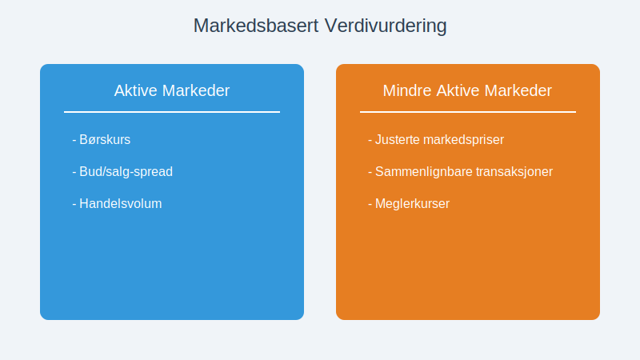
4.1.1 Aktive Markeder
- Børskurs: Siste handelspris på balansedagen
- Bud/salg-spread: Vurdering av likviditet
- Handelsvolum: Indikator på markedets dybde
4.1.2 Mindre Aktive Markeder
- Justerte markedspriser: Hensyn til likviditetsrabatt
- Sammenlignbare transaksjoner: Priser på lignende instrumenter
- Meglerkurser: Uavhengige prisestimater
4.2 Modellbasert Verdivurdering
For ikke-børsnoterte investeringer anvendes verdsettelsesmodeller:
4.2.1 Diskontert Kontantstrøm (DCF)
Nåverdi = Σ (Fremtidig kontantstrøm / (1 + diskonteringsrente)^år)
| År | Forventet kontantstrøm | Diskonteringsrente | Nåverdi |
|---|---|---|---|
| 1 | kr 50.000 | 8% | kr 46.296 |
| 2 | kr 55.000 | 8% | kr 47.146 |
| 3 | kr 60.000 | 8% | kr 47.628 |
| Total nåverdi | kr 141.070 |
4.2.2 Multiplikatormodeller
- P/E-multippel: Pris/inntjening-forhold
- EV/EBITDA: Enterprise value/driftsresultat
- P/B-multippel: Pris/bokført verdi
4.2.3 Substansverdi
For eiendomsinvesteringer og selskaper med betydelige anleggsmidler:
- Markedsverdi av eiendeler minus gjeld
- Takseringer av fast eiendom
- Avhendingsverdi av utstyr og inventar
Seksjon 5: Risikostyring og Porteføljeforvaltning
5.1 Investeringsrisiko
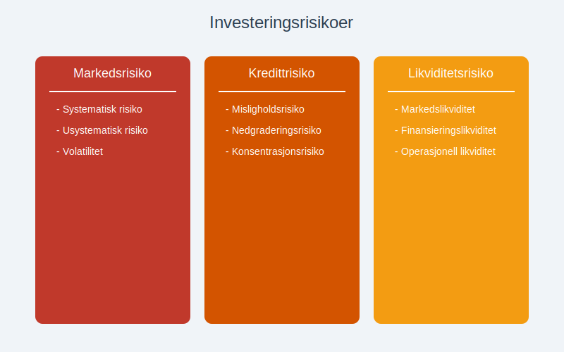
5.1.1 Markedsrisiko
- Systematisk risiko: Påvirker hele markedet
- Usystematisk risiko: Spesifikk for enkeltinvesteringer
- Volatilitet: Svingninger i investeringens verdi
5.1.2 Kredittrisiko
- Misligholdsrisiko: Sannsynlighet for at debitor ikke betaler
- Nedgraderingsrisiko: Forverring av kredittvurdering
- Konsentrasjonsrisiko: For stor eksponering mot enkeltdebitor
5.1.3 Likviditetsrisiko
- Markedslikviditet: Mulighet til å selge uten prispress
- Finansieringslikviditet: Tilgang til kapital for nye investeringer
- Operasjonell likviditet: Kontantbehov for daglig drift
5.2 Diversifisering
Diversifisering reduserer risiko ved å spre investeringer:
| Diversifiseringstype | Beskrivelse | Eksempel |
|---|---|---|
| Aktivaklasse | Ulike typer investeringer | Aksjer, obligasjoner, eiendom |
| Geografisk | Ulike markeder/land | Norge, Europa, USA, Asia |
| Sektormessig | Ulike bransjer | Teknologi, helse, finans |
| Tidsmessig | Ulike investeringstidspunkt | Dollar-cost averaging |
5.3 Porteføljeoptimalisering
Modern porteføljeteori fokuserer på risiko-avkastning-optimalisering:
- Effisient grense: Maksimal avkastning for gitt risikonivå
- Sharpe-ratio: Avkastning per risikoenhet
- Korrelasjon: Sammenheng mellom ulike investeringers avkastning
Seksjon 6: Rapportering og Noteopplysninger
6.1 Balanseoppstilling
Investeringer presenteres i balansen basert på klassifisering:
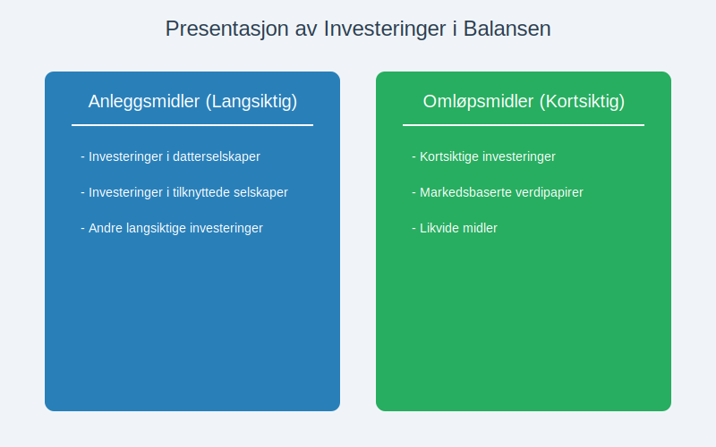
6.1.1 Anleggsmidler
- Investeringer i datterselskaper: Til kostpris eller egenkapitalmetoden
- Investeringer i tilknyttede selskaper: Egenkapitalmetoden
- Andre langsiktige investeringer: Kostpris eller virkelig verdi
6.1.2 Omløpsmidler
- Kortsiktige investeringer: Virkelig verdi
- Markedsbaserte verdipapirer: Børskurs på balansedagen
- Likvide midler: Bankinnskudd og pengemarkedsfond
6.2 Resultatregnskapet
Investeringsrelaterte poster i resultatregnskapet:
- Utbytteinntekter: Fra aksjeinvesteringer
- Renteinntekter: Fra obligasjoner og bankinnskudd
- Kapitalgevinster/-tap: Ved salg av investeringer
- Nedskrivninger: Ved verdifall på investeringer
6.3 Noteopplysninger
Obligatoriske opplysninger om investeringer:
6.3.1 Regnskapsprinsipper
- Klassifisering og måling: Hvordan investeringer behandles
- Verdivurderingsmetoder: Markedspriser vs. modeller
- Nedskrivningsprinsipper: Kriterier for verdifall
6.3.2 Spesifikasjon av Investeringer
| Investeringstype | Bokført verdi | Markedsverdi | Urealisert gevinst/tap |
|---|---|---|---|
| Norske aksjer | kr 2.500.000 | kr 2.750.000 | kr 250.000 |
| Utenlandske aksjer | kr 1.800.000 | kr 1.650.000 | kr (150.000) |
| Obligasjoner | kr 3.200.000 | kr 3.180.000 | kr (20.000) |
| Totalt | kr 7.500.000 | kr 7.580.000 | kr 80.000 |
6.3.3 Risikoeksponering
- Markedsrisiko: Sensitivitetsanalyser
- Kredittrisiko: Kredittkvalitet på obligasjoner
- Valutarisiko: Eksponering mot utenlandsk valuta - se Big Mac-indeksen for valutavurdering
- Konsentrasjonsrisiko: Store enkeltinvesteringer
Seksjon 7: Skattemessige Aspekter
7.1 Skattlegging av Investeringsinntekter
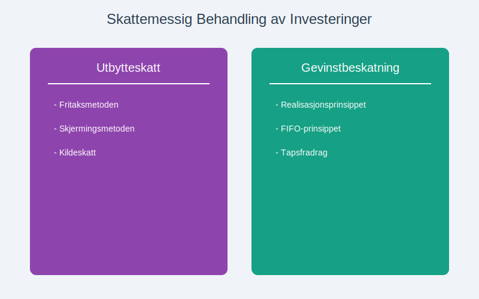
7.1.1 Utbytteskatt
- Fritaksmetoden: For kvalifiserte aksjer i norske selskaper
- Skjermingsmetoden: For andre aksjeinvesteringer
- Kildeskatt: På utbytte fra utenlandske selskaper
7.1.2 Gevinstbeskatning
- Realisasjonsprinsippet: Skatt ved salg, ikke ved verdiøkning
- FIFO-prinsippet: Først inn, først ut ved delvis salg
- Tapsfradrag: Kan trekkes fra gevinster samme år
7.2 Forskjeller Mellom Regnskaps- og Skatterett
| Område | Regnskapsrett | Skatterett | Konsekvens |
|---|---|---|---|
| Verdivurdering | Virkelig verdi | Kostpris | Midlertidige forskjeller |
| Nedskrivninger | Ved verdifall | Kun ved realisert tap | Utsatt skatt |
| Valutagevinster | Løpende | Ved realisasjon | Timing-forskjeller |
Seksjon 8: Moderne Investeringstrender
8.1 ESG-investeringer
Environmental, Social, and Governance (ESG) investeringer fokuserer på bærekraft:
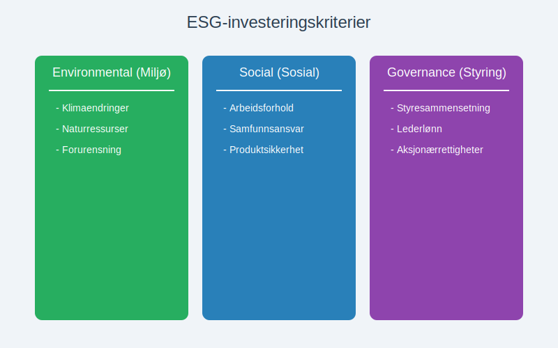
8.1.1 Miljømessige Faktorer
- Klimaendringer: Karbonforavtrykk og klimarisiko
- Naturressurser: Bærekraftig bruk av vann og råvarer
- Forurensning: Utslipp og avfallshåndtering
8.1.2 Sosiale Faktorer
- Arbeidsforhold: Sikkerhet og rettferdige lønninger
- Samfunnsansvar: Bidrag til lokalsamfunn
- Produktsikkerhet: Kvalitet og forbrukerbeskyttelse
8.1.3 Selskapsstyring
- Styresammensetning: Uavhengighet og mangfold
- Lederlønn: Rimelige og prestasjonsbundne ordninger
- Aksjonærrettigheter: Beskyttelse av minoritetsinteresser
8.2 Teknologiske Innovasjoner
8.2.1 Robo-advisors
- Automatisert porteføljeforvaltning: Algoritmebaserte investeringsråd
- Lave kostnader: Reduserte forvaltningshonorarer
- Tilgjengelighet: Investeringstjenester for mindre investorer
8.2.2 Kryptovalutaer og Blockchain
- Bitcoin og Ethereum: Digitale eiendeler som investeringsobjekt
- Regnskapsutfordringer: Klassifisering og verdivurdering
- Regulatorisk usikkerhet: Utviklende lovgivning
8.2.3 Crowdfunding og Peer-to-Peer
For alternative finansieringsformer som crowdfunding, se vår detaljerte guide som dekker regnskapsaspektene ved denne moderne investeringsformen.
Seksjon 9: Praktiske Eksempler og Case-studier
9.1 Case: Porteføljeinvestering i Børsnoterte Aksjer
Situasjon: Et selskap investerer kr 5.000.000 i en diversifisert aksjeportefølje.
9.1.1 Innledende Regnskapsføring
1. januar 2024:
Debet: Kortsiktige investeringer kr 5.000.000
Kredit: Bank kr 5.000.000
9.1.2 Løpende Verdijustering
31. mars 2024 (markedsverdi kr 5.200.000):
Debet: Kortsiktige investeringer kr 200.000
Kredit: Urealisert gevinst kr 200.000
9.1.3 Utbytteinntekt
15. april 2024:
Debet: Bank kr 75.000
Kredit: Utbytteinntekt kr 75.000
9.2 Case: Investering i Datterselskap
Situasjon: Oppkjøp av 80% av aksjene i et datterselskap for kr 10.000.000.
9.2.1 Konsolideringseffekter
- Goodwill: Differanse mellom kjøpspris og andel av netto eiendeler
- Minoritetsinteresser: 20% av datterselskapets egenkapital
- Eliminering: Interne transaksjoner mellom selskapene
For mer detaljert informasjon om konsernregnskap og konsolideringsprosesser, se vår omfattende guide.
9.3 Case: Eiendomsinvestering
Situasjon: Kjøp av utleieeiendom for kr 15.000.000.
9.3.1 Regnskapsføring
Debet: Investeringseiendom kr 15.000.000
Kredit: Bank kr 15.000.000
9.3.2 Løpende Drift
- Leieinntekter: Månedlige inntekter fra leietakere
- Driftskostnader: Vedlikehold, forsikring, eiendomsskatt
- Avskrivninger: Systematisk fordeling av anskaffelseskost
Seksjon 10: Fremtidsutsikter og Konklusjon
10.1 Regulatoriske Utviklingstrender
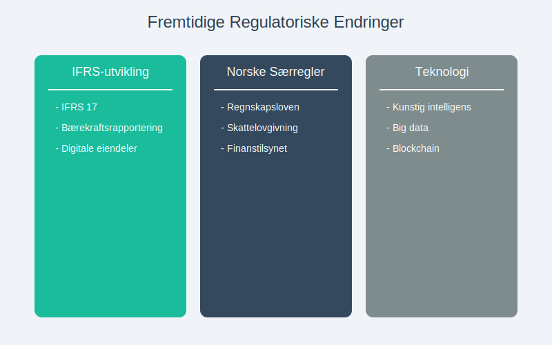
10.1.1 IFRS-utvikling
- IFRS 17: Ny standard for forsikringskontrakter
- Bærekraftsrapportering: Økte krav til ESG-opplysninger
- Digitale eiendeler: Kommende standarder for kryptovalutaer
10.1.2 Norske Særregler
- Regnskapslovens endringer: Tilpasninger til EU-direktiver
- Skattelovgivning: Endringer i investeringsincentiver
- Finanstilsynets retningslinjer: Økt fokus på risikostyring
10.2 Teknologiske Disrupsjoner
- Kunstig intelligens: Automatiserte investeringsbeslutninger
- Big data: Forbedret risikoanalyse og porteføljeoptimalisering
- Blockchain: Økt transparens og reduserte transaksjonskostnader
10.3 Konklusjon
Investeringer representerer en kompleks og kritisk del av moderne regnskap. Fra grunnleggende klassifisering og måling til avanserte verdsettelsesmodeller og risikostyring, krever området dyptgående kunnskap om både regnskapsstandarder og finansielle markeder.
Nøkkelpunkter for suksessfulle investeringer:
- Grundig forståelse av regnskapsstandarder og deres anvendelse
- Systematisk tilnærming til risikostyring og diversifisering
- Løpende overvåking av markedsutvikling og regulatoriske endringer
- Profesjonell rådgivning ved komplekse investeringsbeslutninger
For virksomheter som ønsker å optimalisere sin investeringsstrategi, er det avgjørende å ha solid kunnskap om både de regnskapsmessige og skattemessige konsekvensene av ulike investeringsalternativer. Dette sikrer ikke bare korrekt rapportering, men også informerte beslutninger som maksimerer avkastning innenfor akseptable risikorammer.
Investeringsregnskapet vil fortsette å utvikle seg i takt med finansielle innovasjoner og regulatoriske endringer. Bedrifter som holder seg oppdatert på disse utviklingstrekkene vil være best posisjonert for fremtidig suksess i det komplekse investeringslandskapet.